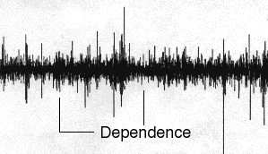

5. Random Fractals and the Stock Market
Visual Signature of Dependence

One visual signature of dependence is that
regions of small differences tend to cluster together (an example is indicated by the right line)
and
regions of large differences tend to cluster together (left line).